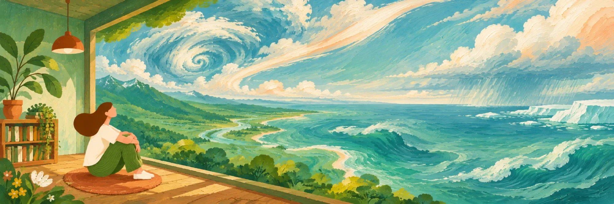

Климатическая тревога —
болезнь илиздравомыслие?
Всё больше людей сообщают о тяжёлом беспокойстве из-за состояния планеты, и вместе с именем «экотревога» пришёл соблазн счесть её расстройством, которое нужно вылечить. Но обычно тревогой зовут страх, несоразмерный угрозе, — а этот страх соразмерен: он реакция на реальную, подтверждённую наукой опасность. Можно ли называть болезнью верное восприятие угрозы? И если тревога о климате — не поломка отдельной психики, то поломку чего она регистрирует? Текст о границе между беспокойством, которое включает, и страхом, который парализует.
Тревога, которую хочется вылечить
Всё больше людей — и особенно молодых — сообщают о тяжёлом, устойчивом беспокойстве из-за состояния планеты. У этого чувства даже появилось имя: климатическая тревога, экотревога. И вместе с именем пришёл соблазн отнестись к нему как к расстройству — тому, что нужно диагностировать, снять, вылечить, чтобы человек вернулся к нормальной жизни.
Но здесь прячется странность. Обычно тревогой мы называем страх, несоразмерный угрозе: паническую атаку в безопасном лифте, ужас перед безобидным пауком. Климатическая же тревога соразмерна — она реакция на реальную, подтверждённую наукой угрозу. Можно ли называть болезнью верное восприятие опасности? И если человек спокоен там, где спокойным быть не из-за чего, — не он ли на самом деле нездоров?
Этот текст о границе, которая проходит внутри климатической тревоги: между беспокойством, которое включает, и страхом, который парализует. И о вопросе, который рубрика «Симптом» задаёт всякий раз: симптом — это всегда сигнал, но сигнал чего? Если тревога о климате — не поломка отдельной психики, то поломка чего она регистрирует?
Что показывают цифры
В 2021 году в журнале Lancet Planetary Health вышло крупнейшее на тот момент исследование климатической тревоги: команда во главе с психологом Кэролайн Хикман опросила десять тысяч молодых людей от 16 до 25 лет в десяти странах — от богатых до бедных, от Финляндии до Филиппин.
Результаты трудно списать на «нервность отдельных чувствительных натур». Около шестидесяти процентов назвали себя очень или крайне обеспокоенными; почти половина сказала, что переживания о климате мешают им в повседневной жизни — есть, спать, учиться, сосредотачиваться. Три четверти согласились с тем, что будущее пугает. И — важнейшая деталь — тревога сильнее всего коррелировала не с самим фактом изменения климата, а с ощущением, что власти предают, ничего всерьёз не делая.
Это уже подсказка. Если бы речь шла о личном расстройстве, оно распределялось бы по психологическим типам. А оно распределяется по странам и по доверию к институтам. Тревогу усиливает не хрупкость психики, а брошенность — чувство, что взрослые и государства знают об угрозе и всё равно не действуют. Это делает её больше похожей не на симптом больного человека, а на симптом больной ситуации.
Соблазн диагноза
Важный факт, который часто теряется: климатической тревоги нет ни в одной официальной классификации психических расстройств. Ни DSM, ни МКБ не считают её болезнью. Психологи и психиатрические ассоциации всё чаще прямо называют её обоснованной, адекватной реакцией на реальную угрозу, а не патологией.
Почему же тянет поставить диагноз? Медикализация обманчиво удобна. Она превращает общую беду в частную поломку: не «мир в опасности», а «у тебя тревожное расстройство». Она перекладывает ответственность с источника угрозы на того, кто её чувствует, — и предлагает решение, которое ничего не меняет в мире: успокоить встревоженного вместо того, чтобы устранить причину тревоги. В пределе это цинично: сделать так, чтобы человек перестал беспокоиться о горящем доме, вместо того чтобы тушить дом.
Отсюда не следует, что страдание не реально или что помощь не нужна. Тяжёлая тревога изматывает, и с ней важно работать. Следует другое: назвать её болезнью — значит совершить категориальную ошибку, приняв верный сигнал за неисправность датчика. Прежде чем лечить чувство, стоит спросить, право оно или нет.
Тревога как здравомыслие
Страх — это древний и полезный механизм: он замечает опасность и мобилизует. Беспокойство о климате в этом смысле работает правильно — оно регистрирует настоящую угрозу и толкает к действию. Патологией была бы обратная реакция: полное спокойствие перед лицом того, что ставит под вопрос условия жизни. Психолог и активистка Джоанна Мэйси десятилетиями повторяет эту мысль: не горе о мире опасно, а онемение, отказ чувствовать. Подавленная тревога никуда не девается — она уходит внутрь и превращается в апатию или отрицание.
Но у здравомыслия есть граница, и она реальна. Беспокойство здорово, пока оно включает: заостряет внимание, меняет привычки, ведёт к общему делу. Оно становится разрушительным, когда переходит в парализующий страх — когда человек тонет в чувстве вины и бессилия, замирает, не может ни спать, ни действовать. Разница не в силе чувства, а в его направлении: адаптивная тревога смотрит вовне, к действию; парализующая закручивается вовнутрь, к отчаянию.
Поэтому честный ответ на вопрос «болезнь или здравомыслие» — не «одно из двух», а указание на порог. Сама по себе тревога о климате — признак контакта с реальностью, а не разрыва с ней. Нездоровы её крайности: с одной стороны отрицание и онемение, с другой — паника, гасящая всякую способность действовать. Здоровье — не отсутствие тревоги, а умение удержать её в той форме, что не ломает, а движет.
Симптом чего?
Если тревога о климате — верный сигнал, то что именно она сигнализирует? Ответ рубрики «Симптом»: не поломку внутри человека, а разрыв в его связи с миром. Философ Гленн Альбрехт придумал для одной из форм этого разрыва слово соластальгия — тоску по родному месту, которое меняется и гибнет прямо на глазах, пока ты в нём находишься. Это не ностальгия по прошлому, а горе по настоящему, утекающему из-под ног. Психика тут не сбоит — она точно регистрирует реальную утрату.
В этой оптике климатическая тревога — телесное, эмоциональное знание того, что связь человека и живого мира повреждена. Мы устроены так, что зависим от места, сезонов, других существ; когда они рушатся, что-то в нас откликается болью раньше, чем разум сформулирует статистику. Тревога оказывается свидетельством не слабости, а того, что связь ещё жива, что мир нам ещё небезразличен.
Это ставит вопрос иначе, чем принято. Лечить нужно не чувство, а его причину — нарушенное отношение к миру, из которого чувство и растёт. В этом климатическая тревога смыкается с общей темой сайта: экологический кризис — не только про углерод и градусы, но и про способ восприятия, про разорванную связь, которую психика замечает первой. Симптом указывает не на пациента, а на мир, в котором он живёт.
От симптома к действию
Если тревога — сигнал о разорванной связи, то и работать с ней лучше не в одиночку. Здесь сходятся данные и практика: исследования всё увереннее показывают, что участие в совместном действии снижает тяжесть климатического дистресса надёжнее, чем индивидуальные способы «успокоиться». Причина проста — действие возвращает то, отсутствие чего тревогу и раздувало: чувство, что ты не бессилен и не брошен.
Отсюда выросли форматы, где тревогу не глушат, а разделяют: климатические кафе, группы совместного переживания, ритуалы горевания по утраченному, о которых пишет та же Джоанна Мэйси в «активной надежде». Их смысл не в том, чтобы убрать тревогу, а в том, чтобы вынести её из одинокой головы в общий круг и превратить топливо страха в топливо действия. Личный симптом становится общей заботой — и перестаёт разрушать.
Важно удержать обе опасности сразу. С одной стороны — отрицание и онемение, соблазн ничего не чувствовать. С другой — отчаяние, соблазн решить, что всё уже потеряно, и опустить руки; отчаяние так же выключает действие, как и безразличие. Здоровый путь лежит между ними и требует мужества: смотреть на угрозу открытыми глазами, позволять себе горевать — и всё равно действовать. Подробнее о спектре этих реакций — в обзорном эссе «Что происходит с нами, когда исчезает мир».
Итог: не диагноз, а сигнал
Климатическая тревога — не болезнь, которую нужно вылечить, чтобы человек снова стал удобным и спокойным. Это работающий сигнал: психика верно считывает реальную угрозу и повреждённую связь с миром. Считать её патологией — значит винить датчик за то, что он заметил пожар. Настоящая нездоровость — на её краях: онемелое отрицание, не желающее чувствовать, и парализующее отчаяние, не желающее действовать.
Здоровье здесь — не в отсутствии тревоги, а в её форме. В умении удержать беспокойство таким, чтобы оно обостряло внимание и вело к общему делу, а не топило в вине и бессилии. И, может быть, самое трезвое, что можно сделать с тревогой о планете, — не заглушить её и не утонуть в ней, а услышать как сигнал, разделить с другими и превратить в действие. Тогда симптом становится тем, чем и должен быть, — началом выздоровления, только не отдельного человека, а его отношений с миром.
Спокойствие там, где спокойным быть не из-за чего, — не здоровье, а анестезия.
Читайте такжеЭволюция сознания — недостающее звено устойчивости — почему знание о кризисе не превращается в действие и что помогает сделать этот шаг.